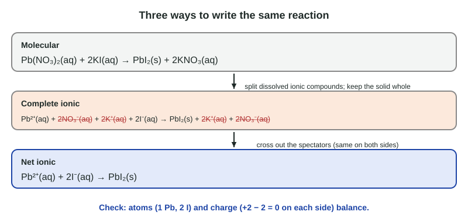

Net Ionic Equations
Dissolved ionic compounds exist as ions.
Part 1 · Hook
Why this matters
Part 2 · Before you start
What this builds on
Part 3 · Prerequisite check
Quick check before you start
1. What happens to an ionic compound such as KBr when it dissolves in water?
- It separates into K⁺ and Br⁻ ions, each surrounded by water
- It stays as KBr units surrounded by water
- Its atoms share electrons with water molecules
- It forms K atoms and Br₂ molecules
Show the answer
A dissolved ionic compound dissociates into ions, each hydrated by water molecules.
- Correct: It separates into K⁺ and Br⁻ ions, each surrounded by water:
- It stays as KBr units surrounded by water:
- Its atoms share electrons with water molecules:
- It forms K atoms and Br₂ molecules:
2. A substance that gives a solution that conducts electricity because it forms ions is
- an electrolyte
- a nonelectrolyte
- a solvent
- a pure substance
Show the answer
Electrolytes form mobile ions in water, which carry charge.
- Correct: an electrolyte:
- a nonelectrolyte:
- a solvent:
- a pure substance:
3. Balance __Al + __Cl₂ → __AlCl₃. What is the coefficient of Cl₂?
- 3
- 2
- 1
- 6
Show the answer
2Al + 3Cl₂ → 2AlCl₃: 6 Cl atoms on each side.
- Correct: 3:
- 2:
- 1:
- 6:
Part 4 · See it
See it first

Part 5 · Step by step
How it works, step by step
- Dissolved ionic compounds exist as separate ions in waterthe complete ionic equation writes them as ions
- Some ions are dissolved both before and after mixingthey are spectator ions and take no part in the change
- Removing the spectators from both sidesleaves the net ionic equation: only the species that change
- Atoms and charge are both conservedthe net ionic equation must balance both
Part 6 · Key ideas
Key ideas
- Molecular equation: whole formulas. Complete ionic equation: every soluble ionic compound split into its ions. Net ionic equation: spectators removed.
- Write as ions only what is mostly ions in water. Solids, liquids, gases and weak electrolytes stay as formulas.
- A spectator ion is dissolved and unchanged on both sides.
- A precipitate is an insoluble solid that forms from solutions. A net ionic equation balances atoms and charge.
Part 7 · Misconception
A common mistake
The wrong idea: In a complete ionic equation you split every compound into ions, including the solids.
What actually happens: Only species that are dissolved as separate ions are split. A precipitate or any other solid is written as one formula, because its ions are held together in the solid, not free in the water.
Part 8 · Check yourself
Check yourself
Exam-style questions. Anything you miss goes into your review queue.
Particle view
Mixing two solutions
Key: gray Ag, silver ion; pink Na, sodium ion; green Cl, chloride ion; blue N with three red O, nitrate ion. Water molecules are not drawn.
1. Which net ionic equation matches the change in the diagram?
- Ag⁺(aq) + Cl⁻(aq) → AgCl(s)
- Na⁺(aq) + NO₃⁻(aq) → NaNO₃(s)
- AgNO₃(aq) + NaCl(aq) → AgCl(s) + NaNO₃(aq)
- Ag⁺(aq) + Cl⁻(aq) → Ag⁺(s) + Cl⁻(s)
Show the answer
Only silver and chloride ions change: they go from moving separately in water to a packed solid. Sodium and nitrate ions look the same before and after, so they are left out.
- Correct: Ag⁺(aq) + Cl⁻(aq) → AgCl(s): Right: the only species that change are Ag⁺ and Cl⁻, which form solid AgCl.
- Na⁺(aq) + NO₃⁻(aq) → NaNO₃(s): Sodium and nitrate ions are still separate in the water after mixing, so no NaNO₃ solid forms.
- AgNO₃(aq) + NaCl(aq) → AgCl(s) + NaNO₃(aq): This is the molecular equation. It is balanced, but it shows spectators and treats dissolved ionic compounds as if they were intact units.
- Ag⁺(aq) + Cl⁻(aq) → Ag⁺(s) + Cl⁻(s): The solid is the compound AgCl, held together by attraction between oppositely charged ions; it is written as one formula with no charges.
2. Which species in the diagram are spectator ions? Select all that apply.
- Na⁺
- NO₃⁻
- Ag⁺
- Cl⁻
Show the answer
A spectator ion is in the solution, unchanged, before and after. Na⁺ and NO₃⁻ are still free in the water after mixing.
- Correct: Na⁺: Right: sodium ions start and end dissolved in the water.
- Correct: NO₃⁻: Right: nitrate ions start and end dissolved in the water.
- Ag⁺: Silver ions leave the solution and become part of the solid, so they take part.
- Cl⁻: Chloride ions leave the solution and become part of the solid, so they take part.
3. Count the ions that are still dissolved in the After mixing box.
Type a number in ions.
Show the answer
Three Na⁺ and three NO₃⁻ remain in the water: 6 ions. The six Ag⁺ and Cl⁻ ions are in the solid.
- Answer: 6 ions
4. A student filters the mixture and dries the solid. What does the liquid that passes through the filter contain, besides water?
- Na⁺ and NO₃⁻ ions, which would form NaNO₃ if the water evaporated
- AgCl dissolved as Ag⁺ and Cl⁻ ions, since the filter breaks up the solid
- No ions, since forming the solid used up each one of them
- Neutral Na and Cl atoms left over after the electrons moved
Show the answer
The spectator ions stay in solution and pass through the filter paper. If the water evaporates, they pack together as solid sodium nitrate.
- Correct: Na⁺ and NO₃⁻ ions, which would form NaNO₃ if the water evaporated: Right: the spectators stay dissolved and pass through.
- AgCl dissolved as Ag⁺ and Cl⁻ ions, since the filter breaks up the solid: The filter paper holds back the solid; it does not break it into ions.
- No ions, since forming the solid used up each one of them: Sodium and nitrate ions never left the solution; only silver and chloride did.
- Neutral Na and Cl atoms left over after the electrons moved: No electrons are transferred here; sodium and chloride stay as ions throughout.
Data table
Spot tests in a well plate
A student mixes 1 mL each of two 0.1 M solutions in the wells of a plate and records what happens. All sodium, potassium and nitrate compounds are soluble in water.
| Well | Solution 1 | Solution 2 | Observation |
|---|---|---|---|
| 1 | Pb(NO₃)₂(aq) | KI(aq) | Bright yellow solid forms |
| 2 | BaCl₂(aq) | Na₂SO₄(aq) | White solid forms |
| 3 | KCl(aq) | NaNO₃(aq) | No visible change |
| 4 | CuSO₄(aq) | NaOH(aq) | Pale blue solid forms |
5. Which is the balanced net ionic equation for well 1?
- Pb²⁺(aq) + 2I⁻(aq) → PbI₂(s)
- Pb²⁺(aq) + I⁻(aq) → PbI(s)
- K⁺(aq) + NO₃⁻(aq) → KNO₃(s)
- Pb(NO₃)₂(aq) + 2KI(aq) → PbI₂(s) + 2KNO₃(aq)
Show the answer
K⁺ and NO₃⁻ are spectators (their compounds are soluble). The yellow solid must be lead(II) iodide. Pb²⁺ needs two I⁻ to make a neutral solid, and the charges balance: +2 + 2(−1) = 0 on the left, 0 on the right.
- Correct: Pb²⁺(aq) + 2I⁻(aq) → PbI₂(s): Right: atoms and charges both balance, and only the changing species appear.
- Pb²⁺(aq) + I⁻(aq) → PbI(s): PbI would need lead to be +1. With Pb²⁺, the neutral solid is PbI₂, and the left side carries a +1 charge that the right side lacks.
- K⁺(aq) + NO₃⁻(aq) → KNO₃(s): Potassium nitrate is soluble, so its ions stay dissolved; they are the spectators.
- Pb(NO₃)₂(aq) + 2KI(aq) → PbI₂(s) + 2KNO₃(aq): This is the molecular equation, which includes the spectator ions in its formulas.
6. Is this equation balanced? Zn(s) + Ag⁺(aq) → Zn²⁺(aq) + Ag(s)
- No; the atoms balance, but the charge is +1 on the left and +2 on the right
- Yes; there is one Zn and one Ag on each side
- No; zinc should be written as Zn²⁺ on the left as well
- Yes; charge does not need to balance in an ionic equation
Show the answer
A net ionic equation balances atoms and charge. Here the charges are +1 and +2. With 2Ag⁺ and 2Ag both balance: Zn(s) + 2Ag⁺(aq) → Zn²⁺(aq) + 2Ag(s).
- Correct: No; the atoms balance, but the charge is +1 on the left and +2 on the right: Right: the charge is unbalanced; 2Ag⁺ and 2Ag fix it.
- Yes; there is one Zn and one Ag on each side: Atoms balance, but charge does not; both must balance.
- No; zinc should be written as Zn²⁺ on the left as well: Zinc starts as a solid metal, so it is written Zn(s).
- Yes; charge does not need to balance in an ionic equation: Charge is conserved, so the total charge must match on both sides.
Part 9 · Summary
Summary
Part 10 · Up next
What comes next
Part 11 · Connections